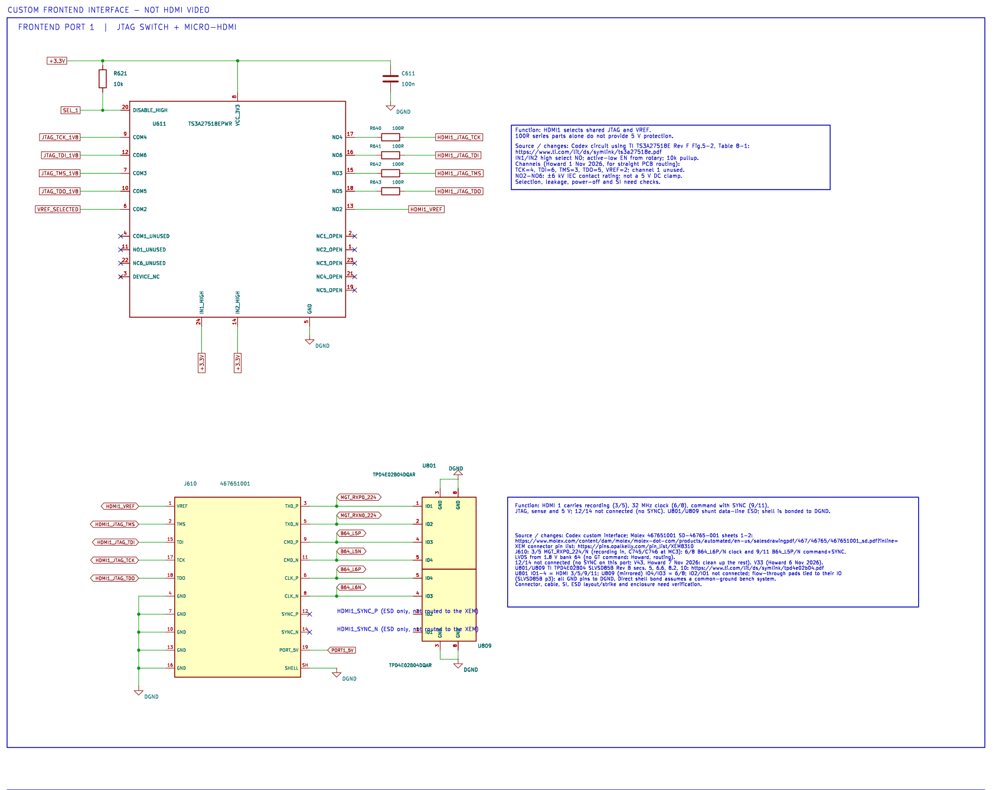

Datasheet · Section 3 · Draft V1
3Interfaces
In short. This section explains what each connection between boards carries. Section 4 then lists every pin. You need this only to write the FPGA programs or to trace a fault; it is not needed to assemble or run the system.
All connections between boards were checked against the saved designs and the agreed pin map (the fixed list of which signal goes on which connector pin). The current pin map is version V8 (19 Nov 2026). It differs from V7 in one thing: each bottom ASIC board now has its own latch line. The check of V8 against the current board files, on 19 Nov 2026, found no difference.
3.1HDMI cable: HDMI Extension Board port to Frontend J3
Every port uses the same pin roles. The clock, command and SYNC signals are LVDS (low-voltage differential signalling): each signal travels on two wires carrying opposite copies, which makes it robust against noise. “Positive” always meets “positive”. The table shows where each port's signals land on the XEM8310 module. “Quad 224 lane 0” means one of the module's high-speed receivers; “B64_L6” means a pin pair in the module's I/O bank 64. (A bank is a group of FPGA pins that share one supply voltage.)
| Port | Recording data, pins 3/5 (module receiver) | Clock, 6/8 | Command + SYNC, 9/11 | SYNC, 12/14 |
|---|---|---|---|---|
| P1 | quad 224 lane 0 | B64_L6 | B64_L5 | – |
| P2 | quad 224 lane 1 | B64_L19 | B64_L3 | – |
| P3 | quad 224 lane 2 | B64_L13 | B64_L7 | B64_L16 |
| P4 | quad 224 lane 3 | B64_L11 | B64_L15 | B64_L23 |
| P5 | quad 226 lane 0 | B64_L1 | B64_L4 | B64_L22 |
| P6 | quad 226 lane 1 | B64_L8 | B64_L2 | B64_L18 |
| P7 | quad 226 lane 2 | B64_L10 | B64_L9 | – |
| P8 | quad 226 lane 3 | B64_L24 | B64_L21 | – |


Design details Frontend end of the cable
Recording from GTP TX0 (balls H2/H1); the 32 MHz clock into clock-capable balls P14/R15; command into M14/N14; SYNC into B9/A9. Each LVDS input has a 100 Ω termination and ESD protection. Pin 1 is pulled to 1.8 V through 1 kΩ so the HDMI Extension Board can sense the head for JTAG. (A ball is one solder connection under the FPGA package.)
- Flip the data polarity. The two wires of the recording pair are crossed: the Frontend's negative wire lands on the module's positive input (pin 3). The Frontend program must invert its output: set
TXPOLARITY = 1. - Use the built-in SYNC on ports 1, 2, 7 and 8. These ports have no separate SYNC wire pair. Heads on them must take the SYNC signal carried inside the command stream and ignore pins B9/A9.
- Set the module's I/O voltage to 1.8 V first. Set the XEM8310's VIO1 to 1.8 V before connecting any head; bank 64, which drives the cable clock and commands, runs from VIO1.
- Drive four latch lines. Each of the four ASIC boards in a head has its own settings latch (section 5, “Configuration and stimulation control”). Up to pin map V7 the two bottom boards shared one latch, so a program written for three latch lines must be changed.
3.2Frontend to FPGA-LDO board (J1 + J2, 140 contacts)
Two Hirose DF40C 70-contact connectors with 0.4 mm spacing join the boards: sockets on the back of the Frontend, plugs on the front of the FPGA-LDO board. Contact n meets contact n. All 140 contacts match the pin map on both boards, including every FPGA pin. The head's 3.3 V supply runs on J2 contacts 68–70. The cable's 5 V is also brought across on J1 contact 32, where the FPGA-LDO board connects it only to a test point.
Design details checks
No contact is spare. J1.36 (FPGA ball V14) was the one spare contact up to pin map V7 and was left open on the FPGA-LDO board; since pin map V8 it carries BOARD3_SPI_LATCH, the latch line of the bottom ASIC board on port J3. The check of 19 Nov 2026 covered all 140 contacts and all 160 port pins on FPGA-LDO A layout V24, and the 121 contacts that lead to an FPGA ball on Frontend V13. Contact alignment was confirmed geometrically on 12 Nov 2026, and the connector positions have not changed since.
3.3FPGA-LDO board to ASIC boards (J3, J4; 80 contacts each)
The FPGA-LDO board has two ASIC ports. Port J4 (socket, on the back) serves ASIC1–4; port J3 (plug, on the front) serves ASIC5–8. On each port the bottom ASIC board holds the first two chips and the top board the next two. The bottom board passes all 80 lines straight up to the top board. Each port has 64 signal lines, 9 supply lines, 6 ground contacts (analog ground 42 and 44; digital ground 3, 5, 46 and 48) and 1 analog input (AC_IN, pin 69). All 160 port pins and every ASIC pad name match the pin map (V8). Pin 61 of each port is the latch line of that port's bottom board; since pin map V8 the two ports no longer share it. Pin map V7 had turned pins 3 and 5 from unused into digital ground.
3.4Host side
The XEM8310 module plugs into the HDMI Extension Board through its three connectors MC1–MC3; section 4.5 lists every module pin the board uses. The PC slot connector (J6, PCIe with 4 lanes) goes to the module's high-speed bank 225. The programming socket is J500 (USB-C), using an FT232H USB-to-JTAG chip.
Both FPGA pin lists were checked against the designs. The Frontend's list is pin file V4 (19 Nov 2026, for schematic V57): all of its 129 pin assignments agree with the FPGA pins of Frontend V13. The HDMI Extension Board's 56 signals were checked on 16 Nov 2026 and all reach the intended connector pins; V39 changed none of those connections. Neither list has yet been run through the FPGA tools (Vivado).